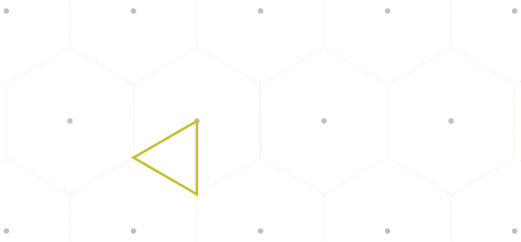

Remainder
pybind11 module brille._brille
This module provides the interface to the C++ library.
All of the symbols defined within brille._brille are imported by
brille to make using them easier.
If in doubt, the interfaced classes can be accessed via their submodule
syntax.
from brille._brille import Direct, BrillouinZone
from brille.plotting import plot as bplot
direct_lattice = Direct((3.95, 3.95, 3.95, 12.9), (90, 90, 90), 'I4/mmm')
brillouin_zone = BrillouinZone(direct_lattice.star)
bplot(brillouin_zone)
- class brille._brille.AngleUnit(self: brille._brille.AngleUnit, value: int) None
Bases:
pybind11_builtins.pybind11_objectThe units of a number representing an angle
Members:
not_provided : unknown, will be inferred
radian : radian
degree : degree
pi : radian divided by pi
- property name
- class brille._brille.Bravais(self: brille._brille.Bravais, value: int) None
Bases:
pybind11_builtins.pybind11_objectA Bravais letter indicating the centering of a lattice
When the unit cell does not reflect the symmetry of the lattice, it is usual to refer to a ‘conventional’ crystallographic basis, \((\mathbf{a}_s\,\mathbf{b}_s\,\mathbf{c}_s)\), instead of a primitive basis, \((\mathbf{a}_p\,\mathbf{b}_p\,\mathbf{c}_p)\). Such a conventional basis has ‘extra’ lattice points added at the centre of the unit cell, the centre of a face, or the centre of three faces. The ‘extra’ nodes in the conventional basis are displaced from the origin of the unit cell by ‘centring vectors’. As with any space-spanning basis, any whole-number linear combination of the conventional basis vectors is a lattice point but in addition there exist linear combinations \(x\mathbf{a}_s+y\mathbf{b}_s+z\mathbf{c}_s\) with at least two fractional coefficients \((x,y,z)\) that are lattice points as well.
Each conventional basis is ascribed a Bravais letter, which forms part of the Hermann-Mauguin symbol of a space group. A subset of the 10 possible Bravais letters is used herein:
Bravais letter
Centring
Centring vectors
P
primitive
\(\mathbf{0}\)
A
A-face centred
\(\frac{\mathbf{b}_s+\mathbf{c}_s}{2}\)
B
B-face centred
\(\frac{\mathbf{c}_s+\mathbf{a}_s}{2}\)
C
C-face centred
\(\frac{\mathbf{a}_s+\mathbf{b}_s}{2}\)
I
body centred (Innenzentriert)
\(\frac{\mathbf{a}_s+\mathbf{b}_s+\mathbf{c}_s}{2}\)
F
all-face centred
\(\frac{\mathbf{b}_s+\mathbf{c}_s}{2}\), \(\frac{\mathbf{c}_s+\mathbf{a}_s}{2}\), \(\frac{\mathbf{a}_s+\mathbf{b}_s}{2}\)
R
rhombohedrally centred (hexagonal axes)
\(\frac{2\mathbf{a}_s+\mathbf{b}_s+\mathbf{c}_s}{3}\) \(\frac{\mathbf{a}_s+2\mathbf{b}_s+2\mathbf{c}_s}{3}\)
For further details, see the IUCr Online Dictionary of Crystallography.
Members:
invalid
P : primitive
A : A-face centred
B : B-face centred
C : C-face centred
I : body-centred
F : face centred
R : rhombohedrally centred
- property name
- class brille._brille.BrillouinZone(*args, **kwargs)
Bases:
pybind11_builtins.pybind11_objectConstruct and hold a first Brillouin zone and, optionally and by default, an irreducible Brillouin zone.
The region closer to a given lattice point than to any other is the Wigner-Seitz cell of that lattice. The same construction is one possible first Brillouin zone of a reciprocal lattice and is used within
brille. For example, a two-dimensional hexagonal lattice has a first Brillouin zone which is a hexagon:
Since all physical properties of a crystal must have the same periodicity as its lattice, the powerful feature of the first Brillouin zone is that it encompasses a region of reciprocal space which must fully represent all of reciprocal space.
Most crystals contain rotational or rotoinversion symmetries in addition to the translational ones which give rise to the first Brillouin zone. These symmetries are the pointgroup of the lattice and enforce that the properties of the crystal also have the same symmetry. The first Brillouin zone, therefore, typically contains redundant information.
An irreducible Brillouin zone is a subsection of the first Brillouin zone which contains the minimal part required to have only unique crystal properties. This class can find an irreducible Brillouin zone for any crystal lattice. In the example of the hexagonal lattice there are six equivalent irreducible Brillouin zones one of which is:

- Parameters
lattice (
brille._brille.Reciprocal) – The reciprocal space lattice for which a Brillouin zone will be founduse_primitive (bool) – If the provided
brille._brille.Reciprocallattice is a conventional Bravais lattice, this parameter controls whether the equivalent primitive Bravais lattice should be used to find the first Brillouin zone. This isTrueby default and should only be modified for testing purposes.search_length (int) – The Wigner-Seitz construction of the first Brillouin zone finds the volume of space closer to a chosen reciprocal lattice point than any other reciprocal lattice point. This is accomplished by successively dividing the space by planes halfway between the chosen point and a subset of all other planes. The subset used is controlled by search_length and is every unique \((\pm s_i\,0\,0)\), \((0\,\pm s_j\,0)\), \((0\,0\,\pm s_k)\), \((\pm s_i\,\pm s_j\,0)\), \((\pm s_i\,0\,\pm s_k)\), \((0\,\pm s_j\,\pm s_k)\), \((\pm s_i\,\pm s_j\,\pm s_k)\) for \(1 \le s_\alpha \le\) search_length. If the reciprocal lattice is primitive then the default search_length of
1should always give the correct first Brillouin zone. For extra assurance that the correct first Brillouin zone is found, the procedure is internally repeated with search_length incremented by one and an error is raised if the two constructed polyhedra have different volumes.time_reversal_symmetry (bool) – Controls whether time reversal symmetry should be added to pointgroups lacking space inversion. This affects the found irreducible Brillouin zone for such systems. To avoid inadvertently adding time reversal symmetry when it is not appropriate, this is
Falseby default.wedge_search (bool) – Controls whether an irreducible Brillouin zone should be found. With this set to
Falsethe returnedbrille._brille.BrillouinZonewill only contain the first Brillouin zone. IfTruethe pointgroup symmetry operations will be used to identify an irreducible Brillouin zone as well. If the provided lattice’s parameters do not match the symmetry of the pointgroup (e.g., a lattice which should be tetragonal like \(I4/mmm\) but constructed with \(\gamma=120^\circ\)) the algorithm will fail to find an appropriate irreducible Brillouin zone and an error will be raised. (Set toTrueby default).
Overloaded function.
__init__(self: brille._brille.BrillouinZone, lattice: brille._brille.Lattice, use_primitive: bool = True, search_length: int = 1, time_reversal_symmetry: bool = False, wedge_search: bool = True, divide_primitive: bool = True) -> None
__init__(self: brille._brille.BrillouinZone, lattice: brille._brille.Lattice, approx_config: brille::approx_float::Config, use_primitive: bool = True, search_length: int = 1, time_reversal_symmetry: bool = False, wedge_search: bool = True, divide_primitive: bool = True) -> None
- property faces_per_vertex
Return the first Brillouin zone face indices for each unique face corner
- static from_file(filename: str, entry: str = 'BrillouinZone') brille._brille.BrillouinZone
Save the object to an HDF5 file
- Parameters
filename (str) – The full path specification for the file to read from
entry (str) – The group path, e.g., “my/cool/bz”, where to read from inside the file, with a default equal to the object Class name
- Return type
clsObj
- property half_edge_points
Return the first Brillouin zone face edge centres in rlu
- property half_edge_points_invA
Return the first Brillouin zone face edge centres in inverse ångstrom
- property ir_faces_per_vertex
Return the irreducible Brillouin zone face index per unique face corner
- ir_moveinto(self: brille._brille.BrillouinZone, Q: numpy.ndarray[numpy.float64], threads: int = 0) tuple
Find points equivalent to those provided within the irreducible Brillouin zone.
The BrillouinZone object defines a volume of reciprocal space which contains an irreducible part of the full reciprocal-space. This method will find points equivalent under the operations of the lattice which fall within this irreducible volume.
- Parameters
Q (
numpy.ndarray) – A 2 dimensional array of three-vectors (Q.shape[1]==3) expressed in units of the reciprocal lattice.threads (integer, optional) – The number of parallel threads that should be used. If this value is less than one the maximum number of OpenMP threads will be used – this value can be controlled by the environment variable
OMP_NUM_THREADSand is typically the number of logical cores if not explicitly set.
- Returns
Qir (
numpy.ndarray) – The array of equivalent irreducible \(\mathbf{q}_\text{ir}\) points for all \(\mathbf{Q}\);tau (
numpy.ndarray) – the closest reciprocal lattice vector, \(\boldsymbol{\tau}\), to each \(\mathbf{Q}\);R (
numpy.ndarray) – the pointgroup symmetry operation \(R\)Rinv (
numpy.ndarray) – the inverse point group symmetry operation which obey \(\mathbf{Q} = R^{-1} \mathbf{q}_\text{ir} + \boldsymbol{\tau}\).
- ir_moveinto_wedge(self: brille._brille.BrillouinZone, Q: numpy.ndarray[numpy.float64], threads: int = 0) tuple
Find points equivalent to those provided within the irreducible wedge.
The BrillouinZone object defines a wedge of reciprocal space which contains an irreducible part of the full-space 4π steradian solid angle. This method will find points equivalent under the pointgroup operations of the lattice which fall within this irreducible solid angle and maintain their absolute magnitude.
- Parameters
Q (
numpy.ndarray) – A 2 dimensional array of three-vectors (Q.shape[1]==3) expressed in units of the reciprocal lattice.threads (integer, optional (default 0)) – The number of parallel threads that should be used. If this value is less than one the maximum number of OpenMP threads will be used – this value can be controlled by the environment variable
OMP_NUM_THREADSand is typically the number of logical cores if not explicitly set.
- Returns
The array of equivalent in-wedge \(\mathbf{Q}_\text{ir}\) points for all \(\mathbf{Q}\), and the pointgroup operation fulfilling \(\mathbf{Q}_\text{ir} = R \mathbf{Q}\).
- Return type
- property ir_normals
Return the irreducible Brillouin zone face normals in rlu
- property ir_normals_invA
Return the irreducible Brillouin zone face normals in inverse ångstrom
- property ir_normals_primitive
Return the irreducible Brillouin zone face normals in primitive-lattice rlu
- property ir_points
Return the irreducible Brillouin zone face centres in rlu
- property ir_points_invA
Return the irreducible Brillouin zone face centres in inverse ångstrom
- property ir_points_primitive
Return the irreducible Brillouin zone face centres in primitive-lattice rlu
- property ir_polyhedron
Returns the irreducible Brillouin zone
brille._brille.Polyhedron- Returns
If no irreducible Brillouin zone was requested at construction, the returned polyhedron is that of the first Brillouin zone instead.
- Return type
brille._brille.Polyhedron
- property ir_polyhedron_generated
Returns the found irreducible Brillouin zone
brille._brille.PolyhedronIf the lattice pointgroup does not contain the space inversion operator the internally held ‘irreducible’ polyhedron is only half of the real irreducible polyhedron. This method gives access to the polyhedron found by the algorithm before being doubled for output.
- property ir_vertices
Return the irreducible Brillouin zone unique face corners in rlu
- property ir_vertices_invA
Return the irreducible Brillouin zone unique face corners in inverse ångstrom
- property ir_vertices_per_face
Return the irreducible Brillouin zone unique face corners per face
- property ir_vertices_primitive
Return the irreducible Brillouin zone unique face corners in primitive-lattice rlu
- isinside(self: brille._brille.BrillouinZone, points: numpy.ndarray[numpy.float64]) List[bool]
Determine whether each of the provided reciprocal lattice points is located within the first Brillouin zone
- Parameters
Q (
numpy.ndarray) – A 2 dimensional array of three-vectors (Q.shape[1]==3) expressed in units of the reciprocal lattice.- Returns
One dimensional logical array with
Trueindicating ‘inside’- Return type
- property lattice
Returns the defining
brille._brille.Latticelattice
- moveinto(self: brille._brille.BrillouinZone, Q: numpy.ndarray[numpy.float64], threads: int = 0) tuple
Find points equivalent to those provided within the first Brillouin zone.
- Parameters
Q (
numpy.ndarray) – A 2 dimensional array of three-vectors (Q.shape[1]==3) expressed in units of the reciprocal lattice.threads (integer, optional) – The number of parallel threads that should be used. If this value is less than one the maximum number of OpenMP threads will be used – this value can be controlled by the environment variable
OMP_NUM_THREADSand is typically the number of logical cores if not explicitly set.
- Returns
The floating point array of equivalent reduced \(\mathbf{q}\) points for all \(\mathbf{Q}\), and an integer array filled with \(\boldsymbol{\tau} = \mathbf{Q}-\mathbf{q}\).
- Return type
- property normals
Return the first Brillouin zone face normals in rlu
- property normals_invA
Return the first Brillouin zone face normals in inverse ångstrom
- property normals_primitive
Return the first Brillouin zone face normals in primitive-lattice rlu
- property points
Return the first Brillouin zone face centres in rlu
- property points_invA
Return the first Brillouin zone face centres in inverse ångstrom
- property points_primitive
Return the first Brillouin zone face centres in primitive-lattice rlu
- property polyhedron
Returns the first Brillouin zone
brille._brille.Polyhedron
- to_file(self: brille._brille.BrillouinZone, filename: str, entry: str = 'BrillouinZone', flags: str = 'ac') bool
Save the object to an HDF5 file
- Parameters
filename (str) – The full path specification for the file to write into
entry (str) – The group path, e.g., “my/cool/bz”, where to write inside the file, with a default equal to BrillouinZone name
flags (str) – The HDF5 permissions to use when opening the file. Default ‘a’ writes to an existing file – if entry exists in the file it is overwritten.
Note
Possible flags are:
flags
meaning
HDF equivalent
‘r’
read
H5F_ACC_RDONLY
‘x’
write, error if exists
H5F_ACC_EXCL
‘a’
write, append to file
H5F_ACC_RDWR
‘c’
write, error if exists
H5F_ACC_CREAT
‘t’
write, replace existing
H5F_ACC_TRUNC
- Returns
Indication of writing success.
- Return type
bool
- property vertices
Return the first Brillouin zone unique face corners in rlu
- property vertices_invA
Return the first Brillouin zone unique face corners in inverse ångstrom
- property vertices_per_face
Return the first Brillouin zone face corner indices for each face
- property vertices_primitive
Return the first Brillouin zone unique face corners in primitive-lattice rlu
- property wedge_normals
Return the normals of the irreducible wedge rlu
- property wedge_normals_invA
Return the normals of the irreducible wedge inverse ångstrom
- property wedge_normals_primitive
Return the normals of the irreducible wedge primitive-lattice rlu
- class brille._brille.HallSymbol(self: brille._brille.HallSymbol, Hall_symbol: str) None
Bases:
pybind11_builtins.pybind11_objectA crystallographic spacegroup’s symmetries encoded in Hall’s notation
Hall proposed a compact unambiguous notation for the representation of the generators of a spacegroup. Within his notation each motion is comprised of a character with one or more subscripts and superscripts which describe its order, unique axis, and translation. The notation specifies that, depending on the position of a motion and details of any preceding motion, some or all of the sub- and superscripts can be omitted. The
HallSymbolhas been written to handle the logic necessary to decode a Hall symbol into its equivalent motions. An added complication arises when the Hall symbol is encoded as an ASCII string. Namely, there are no sub- or superscript glyphs and some scheme must be enacted to represent them.
- class brille._brille.Lattice
Bases:
pybind11_builtins.pybind11_objectA space-spanning lattice in three dimensions
A space-spanning lattice in \(N\) dimensions has \(N\) basis vectors which can be described fully by their \(N\) lengths and the \(\sum_1^{N-1} 1\) angles between each set of basis vectors, or \(\sum_1^N 1 = \frac{1}{2}N(N+1)\) scalars in total. This class stores the basis vectors of the lattice described in an orthonormal space, plus the metric of the space, and the equivalent information for the dual of the lattice.
- Variables
a,b,c (float) – The basis vector lengths
alpha,beta,gamma (float) – The angles between the basis vectors, internally always in radian
volume (float) – The volume of the lattice unit cell in units of length cubed.
bravais (
Bravais) – The centring type of the latticespacegroup (
Symmetry) – The Spacegroup symmetry operations of the latticepointgroup (
PointSymmetry) – The Pointgroup symmetry operations of the latticebasis (
Basis) – The positions of all atoms within the lattice unit cell
- get_contravariant_metric_tensor()
Calculate the contravariant metric tensor of the lattice
- Returns
The inverse of the metric of the lattice
\[g^{ij} = \begin{pmatrix} a^2 & ab\cos\gamma & ac\cos\beta \\ ab\cos\gamma & b^2 & bc\cos\alpha \\ ac\cos\beta & bc\cos\alpha & c^2 \end{pmatrix}^{-1} \]- Return type
matrix_like
- get_covariant_metric_tensor()
Calculate the covariant metric tensor of the lattice
- Returns
The metric of the lattice
\[g_{ij} = \begin{pmatrix} a^2 & ab\cos\gamma & ac\cos\beta \\ ab\cos\gamma & b^2 & bc\cos\alpha \\ ac\cos\beta & bc\cos\alpha & c^2 \end{pmatrix} \]- Return type
matrix_like
- class brille._brille.LengthUnit(self: brille._brille.LengthUnit, value: int) None
Bases:
pybind11_builtins.pybind11_objectThe units of a number representing a length
Members:
none
angstrom : 10⁻¹⁰ meter
inverse_angstrom : 1 / angstrom
- property name
- class brille._brille.PointSymmetry(self: brille._brille.PointSymmetry, Hall_number: int, time_reversal: int = 0) None
Bases:
pybind11_builtins.pybind11_objectHolds the \(3 \times 3\) rotation matrices \(R\) which comprise a point group symmetry.
A point group describes the local symmetry of a lattice point. It contains all of the generalised rotations of a
Symmetrywith none of its translations.- nfolds(self: brille._brille.PointSymmetry, arg0: int) brille._brille.PointSymmetry
- class brille._brille.RotatesLike(self: brille._brille.RotatesLike, value: int) None
Bases:
pybind11_builtins.pybind11_objectEnumeration indicating how vector and matrix values transform
Members:
Real : real space vector or matrix
Reciprocal : reciprocal scpace vector or matrix
Axial : real space axial vector
Gamma : (real space) phonon eigenvector
- property name
- class brille._brille.SortingStatus(self: brille._brille.SortingStatus, sorted: bool, locked: bool, visits: int) None
Bases:
pybind11_builtins.pybind11_objectAn object representing the status of a single object under sorting.
Internally may be represented as a single unsigned integer where two or more bits are reserved for various flags, or as a set of boolean values and an integer.
- property locked
Return the locked flag
- property sorted
Return the sorted flag
- property visits
Return the visit count
- class brille._brille.Symmetry(*args, **kwargs)
Bases:
pybind11_builtins.pybind11_objectOne or more symmetry operations of a space group.
A symmetry operation is the combination of a generalised rotation, \(W\), and translation, \(\mathbf{w}\). For any position in space, \(\mathbf{x}\), the operation transforms \(\mathbf{x}\) to another equivalent position
\[\mathbf{x}' = W \mathbf{x} + \mathbf{w} \]and can equivalently be expressed as \(\mathbf{x}' = \mathscr{M}\mathbf{x}\).
Crystallographic symmetry operations have an order, \(o\), for which \(\mathscr{M}^o = \mathscr{E}\) i.e. \(o\) repeated applications of the operation is equivalent to the identity operator.
A set of symmetry operations can form a group, \(\mathbb{G}\), with the property that \(\mathscr{M}_k = \mathscr{M}_i \mathscr{M}_j\) with \(\mathscr{M}_i,\mathscr{M}_j,\mathscr{M}_k \in \mathbb{G}\).
This class can be used to hold any number of related symmetry operators, and to generate all spacegroup operators from those stored.
- Parameters
hall (int) – The integer Hall number for the desired space group operations [[deprecated]].
W (arraylike, int) – The generalised rotation (matrix) part of the symmetry operator(s)
w (arraylike, float) – The translation (vector) part of the symmetry operator(s)
cifxyz (str) – The symmetry operator(s) encoded in CIF xyz format
Note
The overloaded forms of
__init__take one of hall, (W, w), or cifxyz.Overloaded function.
__init__(self: brille._brille.Symmetry, Hall number: int) -> None
__init__(self: brille._brille.Symmetry, W: numpy.ndarray[numpy.int32], w: numpy.ndarray[numpy.float64]) -> None
__init__(self: brille._brille.Symmetry, CIF xyz string: str) -> None
- generate(self: brille._brille.Symmetry) brille._brille.Symmetry
- generators(self: brille._brille.Symmetry) brille._brille.Symmetry
- brille._brille.emit(*args, **kwargs)
Overloaded function.
emit() -> bool
Return the output status of the
brillestatus printer.- Returns
The value of the status printer STDOUT switch.
- Return type
bool
emit(brille::printer emit status: bool) -> bool
Modify the output status of the
brillestatus printer.- Parameters
emt (bool, optional) – Control whether status messages are printed to STDOUT
- Returns
The value of the status printer STDOUT switch.
- Return type
bool
- brille._brille.emit_datetime(*args, **kwargs)
Overloaded function.
emit_datetime() -> bool
Return the timestamp output status of the
brillestatus printer.- Returns
The value of the status printer timestamp switch
- Return type
bool
emit_datetime(brille::printer emit datetime status: bool) -> bool
Modify the timestamp output status of the
brillestatus printer.- Parameters
emt (bool, optional) – Control whether a timestamp precedes every status message
- Returns
The value of the status printer timestamp switch
- Return type
bool
- brille._brille.real_space_tolerance(*args, **kwargs)
Overloaded function.
real_space_tolerance() -> float
real_space_tolerance(arg0: float) -> None
- brille._brille.reciprocal_space_tolerance(*args, **kwargs)
Overloaded function.
reciprocal_space_tolerance() -> float
reciprocal_space_tolerance(arg0: float) -> None